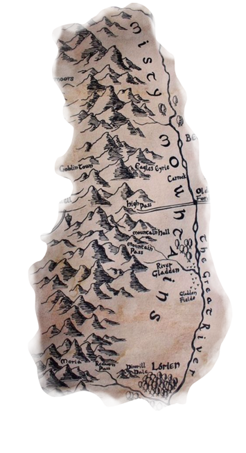

<!DOCTYPE html>
<html>
    <head>
        <title> Lord of The Rings</title>
        <link rel="stylesheet" href="style-sheet.css" >
        <link rel="preconnect" href="https://fonts.googleapis.com">
       <link rel="preconnect" href="https://fonts.gstatic.com" crossorigin>
       <link href="https://fonts.googleapis.com/css2?family=Baskervville:ital@0;1&family=Jacques+Francois+Shadow&family=Libre+Baskerville:ital,wght@0,400;0,700;1,400&display=swap" rel="stylesheet">
</head>
</html>

<body>
    <section id="landing"> 
        <div></div>
    </section>

    <section id="map-spot1" class="flex-area">
        <div class="map-image"></div>
        <div class="map-text">
            <h1> Hobbiton</h1>
            <h4>Located in the Shire, Hobbiton is the village where
                 Hobbits reside. It is on the country side and known for 
                 its quite and peaceful manner. This is where our main 
                 characters Frodo, Sam,Pippin, and Merry come from.   </h4>
        </div>
    </section>
    <section id="map-spot2" class="flex-area">
        <div class="map-text">
            <h1>The Misty Mountains</h1>
            <h4> The Misty Mountains are traveled through by the hobbits and other
                cretures often times when journeying thorough Middel Earth. 
                The Misty Mountains have been home to many species; Dawrves had occupied the mines of 
                Moria. However, latey goblins and orcs have taken over parts of the mountians 
                making them a dangerous place to travel.
            </h4>
        </div>
        <div id ="misty" class="map-image"></div>
    </section>

    <section id="map-character1" class = "flex-area">
        <div id = "orc-text"> <h2> O</h2>
                              <h2> R</h2>
                              <h2> C</h2> </div>
        <div  id = "orc" class = "char-image"></div>
        <div class = "char-image"></div>
        <div id = "dwarve-text"> <h2> D</h2>
            <h2> W</h2>
            <h2> A</h2>
            <h2> R</h2>
            <h2> V</h2>
            <h2> E</h2></div>
    </section>

    <section id="map-spot1" class="flex-area">
        <div class="map-image"></div>
        <div class="map-text">
            <h1>Gondor</h1>
            <h4>Greatest kingdom of Middle Earth's west. 
                            founded by the brothers Isildur and Anarion,
                                exiles from Numenor.</h4> </div>
    </section>
    <section id="map-spot2" class="flex-area">
        <div class="map-text">
            <h1> Mordor</h1>
            <h4>Mordor, in the Southeast of Middle Earth is one of the darker parts of Middle Earth.
                This is where the Necromancer resides and evil brews. Surrounded by three mountain ranges, 
                to the north, the west, and the south, the terrain allows for tough invasion as well as escape. 

            </h4>
        </div>
        <div class="map-image"></div>
    </section>

    <section id="map-character1" class = "flex-area">
        <div id="hobbits">
        <div class = "char-image"></div>
        <div class = "char-image"></div>
        </div>
        <div id="hobbits1">
        <div class = "char-image"></div>
        <div class = "char-image"></div></div>
        <div id = "hobbit-text"> <h2> HO</h2>
            <h2> BB</h2>
            <h2> ITS</h2>
            </div>
    </section>

    <section id="ring-section">
        <div class ="ring-image"></div>
        <div class = "ring-text"><h4 class = "ring-text1"> The Ruling Ring</h4>
            <h4 class = "ring-text2"> A magic ring, turning its wearer invisible. This ring orignially
                finds Bilbo Baggins in the Hobbit and is used wisley by him to get out of 
                sticky situations. Although helpful, the ring has an evil secret and in Lord of the Rings 
                it is up to Frodo Baggins to destroy the ring a save Middle Earth.
            </h4></div>
    </section>

    <section id="book-description" class="flex-area">
        <div class="book-text"> <h1> Synoposis</h1>
                          <p>In ancient times the Rings of Power were crafter by the Elven-smiths, 
                        and Sauron, the Dark Lord, forged the One Ring, filling it with his own power 
                        so that he could rule all others. But the One Ring was taken from him, and though 
                    he sought it throughout Middle-earth, it remained lost to him. After many ages 
                it fell into the hands of Bilbo Baggins, as tolf in <em>The Hobbit</em>. 
            In a sleepy village in the Shire, young Frodo Baggins finds himself faced with an immense 
        task as his elderly cousin Bilbo entrusts the Ring to his care. Frodo must keave his home 
    and ,make a perilous journey across Middle-earth to the Crack of Doom, there 
to destory the Ring and foil the Dark Lord in his evil purpose.</p>  </div>
        <div class ="book-img"><a href="https://www.barnesandnoble.com/w/the-hobbit-and-the-lord-of-the-rings-boxed-set-j-r-r-tolkien/1141389292;jsessionid=724A53EF4827179DCABAE57988A17AEF.prodny_store02-atgap16?ean=9780547928180"></a></div>
    </section>


</body>